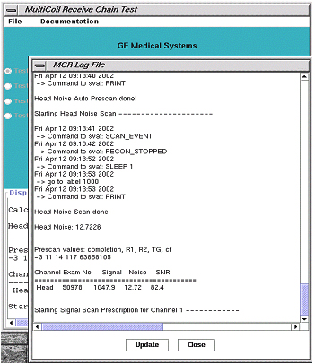
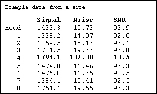

Illustration 10: VIEWING LOG FILE

Illustration 11: 8-CHANNEL EXAMPLE DATA

To isolate the problem depicted in Illustration 9, select the Test single channel mode radio button in the MCR window, and test channel 4. Using the block diagram as a guide, substitute components from a neighboring receive path until the failing component is identified.
Tip: First view the images that were used in the SNR measurement before beginning the troubleshooting process. You may see something, such as a zipper artifact or something else, that makes it look like there is an SNR problem.
If all the channels have similar SNR (MCR passes), troubleshoot the specific surface coils that are causing the problem. (Check the coil config, external and internal cables, pin diodes, etc.)